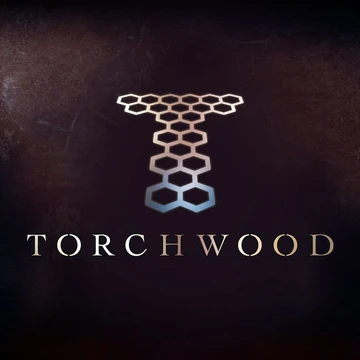
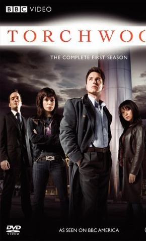
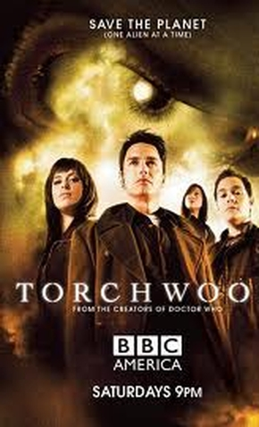
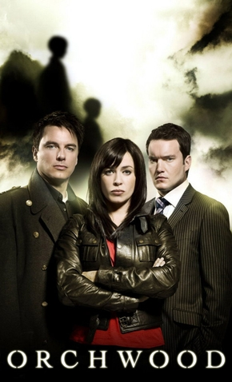
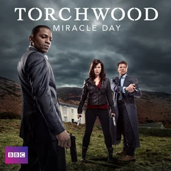

Torchwood
Em 2002, Russell T Davies começou a desenvolver a ideia de uma série de sci-fi e crime, de estilo mais americanizao, tendo por base as séries Angel e Buffy. O projeto se chamava Excalibur e ficou engavetado até 2005, quando o produtor-chefe da BBC3 chamou o responsável pelo sucesso do retorno de Doctor Who para escrever um programa de ficção científica para adultos.
RTD decidiu então então fazer de seu velho projeto um spin-off de seu trabalho de então, dando origem a Torchwood, programa com um tom muito mais sombrio que Doctor Who, contando com mais ação, humor visceral, teor sexual explícito, etc.
A série é protagonizada pelo Capitão Jack Harkness e pela ex-policial Gwen Cooper, tendo por coadjuvantes Ianto Jones, Toshiko Sato e Owen Harper – nas três primeiras temporadas; e Rex Matheson, a Dra. Vera Juarez, Esther Drummond e Rhys Williams – na 4ª temporada. Vale notar também que as três primeiras temporadas – produzidas apenas pela BBC – colocam a série dentro do universo de Doctor Who, o que não ocorre na 4ª temporada – coproduzida por BBC Worldwide e Starz.
Nas duas primeiras temporadas, cada história corresponde a um episódio, havendo, claro, casos de episódios duplos. Já a partir da 3ª, uma única história domina todos os episódios.
Curiosamente, Torchwood foi a cada temporada angariando maior público. Tanto é que sua 1ª temporada foi transmitida no BBC3, a 2ª na BBC2, a 3ª na BBC1 e a 4ª tanto na BBC1 quanto no canal a cabo americano Starz.
1ª Temporada
1.01 – Everything Changes
1.02 – Day One
1.03 – Ghost Machine
1.04 – Cyberwoman
1.05 – Small Worlds
1.06 – Countrycide
1.07 – Greeks Bearing Gifts
1.08 – They Keep Killing Suzie
1.09 – Random Shoes
1.10 – Out of Time
1.11 – Combat
1.12 – Captain Jack Harkness
1.13 – End of Days
Links alternativos: Top TV Shows/Series Torrent
2ª Temporada
2.01 – Kiss Kiss, Bang Bang
2.02 – Sleeper
2.03 – To the Last Man
2.04 – Meat
2.05 – Adam
2.06 – Reset
2.07 – Dead Man Walking
2.08 – A Day in the Death
2.09 – Something Borrowed
2.10 – From Out of the Rain
2.11 – Adrift
2.12 – Fragments
2.13 – Exit Wounds
Links alternativos: Top TV Shows/Series Torrent
3ª Temporada: Children of Earth

3.01 – Day One
3.02 – Day Two
3.03 – Day Three
3.04 – Day Four
3.05 – Day Five
Links alternativos: Top TV Shows/Series Torrent
4ª Temporada: Miracle Day
4.01 – The New World
4.02 – Rendition
4.03 – Dead of Night
4.04 – Escape to L.A.
4.05 – The Categories of Life
4.06 – The Middle Men
4.07 – Immortal Sins
4.08 – End of the Road
4.09 – The Gathering
4.10 – The Blood Line
Links alternativos: Top TV Shows/Series Torrent
Torchwood Declassified

Assim como Doctor Who, Torchwood teve uma série companheira: Torchwood Declassified, que também acompanhou as mudanças na série. Se em suas duas primeiras temporadas Declassified era produzida e transmitida na mesma frequência da série principal em episódios de 10-15 minutos, nas duas últimas foi lançada exclusivamente para Home Video, concentrada em cerca de um episódio por temporada, com cerca de 30 minutos cada. Nenhum dos episódios de Torchwood Declassified possui legenda em português.
1ª Temporada
xx.Welcome to Torchwood (Preview)
01.Jack’s Back (Everything Changes)
02.Bad Day at the Office (Day One)
03.Living History (Ghost Machine)
04.Girl Trouble(Cyberwoman)
05.Away with the Fairies(Small Worlds)
06.The Country Club (Countrycide)
07.There’s Something About Mary (Greeks Bearing Gifts)
08.Beyond the Grave (They Keep Killing Suzie)
09.Dead Man Walking (Random Shoes)
10.Time Flies (Out of Time)
11.Weevil Fight Club (Combat)
12.Blast from the Past (Captain Jack Harkness)
13.To the End (End of Days)
2ª Temporada
01.Home and Hart (Kiss Kiss, Bang Bang)
02.Sleepless in Cardiff (Sleeper)
03.Step Back in Time (To the Last Man)
04.Save the Whale(Meat)
05.Past Imperfect (Adamn)
06.Animal Pharm (Reset)
07.Death Defying (Dead Man Walking)
08.Dead Eyes Open (A Day in the Death)
09.Something New (Something Borrowed)
10.In Living Colour (From Out of the Rain)
11.Quid Pro Quo (Adrift)
12.Clean State (Fragments)
13.Avulsion (Exit Wounds)
3ª e 4ª Temporadas
xx.Cracking Children of Earth(Children of Earth)
xx.Behind the Scenes (Miracle Day)
xx.FX Special on Miracle Day (Miracle Day)
Problemas nos links? Informe nos comentários!